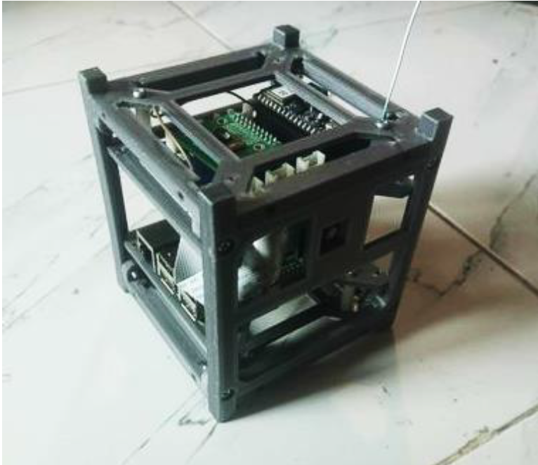
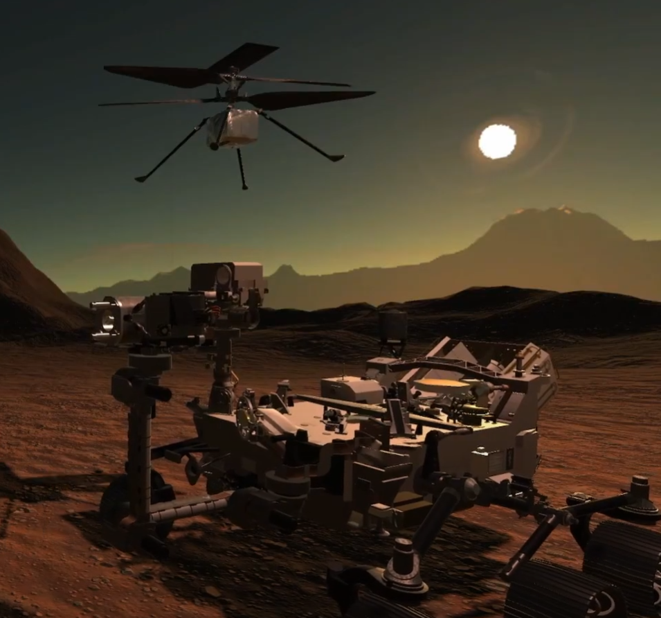

|
Irfan Nafiz Shahan Hello! I'm an electrical engineering student with interests in Computer Vision, Autonomous Vehicles, Robotics and Space Systems. I work with Mizanul Chowdhury, (MIT Lincoln Lab and MIT SPHERES Scientist), on SmallSat Systems in the FrontierSatellite project, and create robotic simulations systems and VMs that aid in STEM robotics education for JAXA's Kibo Robot Programming Challenge in STEMX365. Currently in my senior year at SUST, Bangladesh, I am being advised by my dept. head, Dr. Md. Rasedujjaman (PhD. Aix-Marseille Université and Institut Fresnel), on my bachelor thesis "CARLASnowScenes" developing robust autonomous vehicle computer vision networks navigating in adverse weather conditions. In my free time I enjoy badminton, body-building, guitar, and fine-arts. I also take joy in making VR games! Email / CV / Google Scholar / Github / LinkedIn / Scholarships |
{kind=link}
Research InterestsI'm interested in computer vision, autonomous vehicles, robotics, and smallsats. Mostly I work extensively on making robust neural networks for autonomous vehicles in adverse weather. Furthermore I try to make smallsat systems affordable for space democratization. Some papers and projects are highlighted below. |
|
|
CARLASnowScenes: Towards Solving Adverse Weather Driving – An analysis and approach to Synthetic Snow Road Scenes for Autonomous Driving
Irfan Nafiz Shahan, Pulok Ahmed Auvi, Md. Rasedujjaman Creating synthetic, dynamic snow weather for autonomous vehicle training and testing in adverse weather conditions. Aimed at bridging the sim2real gap for snow weather autonomous driving. |
|
|
IBraille: A Cost Effective Braille Display for the Visually Impaired
Irfan Nafiz Shahan, Al-Mubin Nabil, MM Abdul Karim, P. Dey, A. Paul, T. Choudhury Video / Poster A braille display built from first principles, utilizing off the shelf available materials and a novel design - leading ot a cost reduction of 400x than that of commercial displays. Recieved 10,000 USD funding from Bangladesh ICT Division through a rigorous 4-stage selection process among 1000+ industry and academic teams. |
|


|
SUSTsat-1: A Low Cost, High Efficiency Raspberry Pi based Multifunctional SmallSat
Irfan Nafiz Shahan, Pulok Ahmed Auvi, SUST's very first amateur cubesat, built for FSK, POCSAG and SSTV transmission of an assortment of sensor data. |

|
A Survey on Autonomous Vehicle Perception in Adverse Weather Conditions
Irfan Nafiz Shahan, Pulok Ahmed Auvi, Md. Rasedujjaman A comprehensive survey paper, showcasing use of synthetic data for autonomous vehicle perception in adverse weather conditions. |
|
|
A Secure, Cost Effective Approach to RFID Data Logging for Large Institutions
Md. Rasedujjaman, Irfan Nafiz Shahan, N. Rakhaine, I. Ahmed A ground up RFID data logging system that is secure, cost effective and scalable for large institutions with internal server architecture. We compare and consider existing information security systems, showcasing current device advantages and limitations. |
|
|
TinyRecycler: A low-cost smart trash segregation system utilizing tiny ML for developing countries
Irfan Nafiz Shahan, Pulok Ahmed Auvi, We propose a prototype for a low-investment trash segregation mechanism that uses embedded machine learning using tensorflow lite for microcontrollers. The system is designed to be low cost, low power and scalable using IoT architectures for developing countries. |
Other Projects |
|
|
|
A ROS based simulation of NASA’s Astrobee for unmanned space robot used for repairs during an ammonia leak on the ISS
Irfan Nafiz Shahan, Al-Mubin Nabil, A. Abrar, A. Hossain, S. Sakib, Shortest Path Raytracing Algorithm (Floyd-Warshall algorithm) with Keep in Zone (KIZ) and Keep out Zone (KOZ) padding was used to navigate autonomously in a simulated ISS environment - repairing simulated ammonia leaks. |
|
|
Project Icarus - A VR Experience of the Parker Solar Probe
Irfan Nafiz Shahan, Al-Mubin Nabil, A. Hossain, S. Sakib, S. Rahman, F. Reefat A Virtual Reality N-Body Simulator Experience made with Unity Engine, detailing the journey of the Parker Solar Probe. |
|

|
Perseverance Re-imagined - A VR Experience of the Perseverance Mars Rover
Irfan Nafiz Shahan, A. Hossain, Al-Mubin Nabil, S. Sakib, B. Choudhury A VR Based Recreation Perseverance Rover Launch, Landing and Deployment in Mars Terrain developed on Unity Engine |
Miscellaneous |
Invited Talks
|
- NSDC Bi-Annual Meeting May 2024
- NSDC Bi-Annual Meeting Nov 2023 - “Meet Team I-Braille – An Experience Sharing Session” by STUDIO XI, Dept. of Architecture, SUST, 2021 |
Professional Service
|
Technical Student Asst. in International Science, Technology, Engineering, Mathematics and Education Conference 2023, Huston-Tillotson University, TX, USA
|
|
Feel free to steal this website's source code. Do not scrape the HTML from this page itself, as it includes analytics tags that you do not want on your own website — use the github code instead. Also, consider using Leonid Keselman's Jekyll fork of this page. |